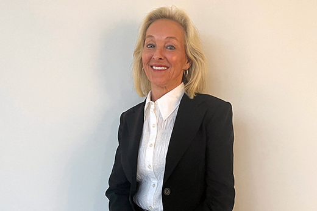
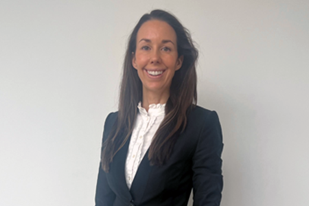
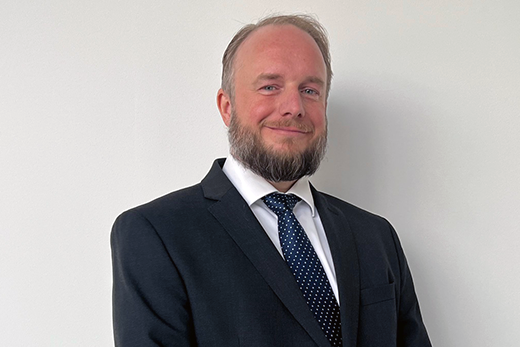

Personskade
Erstatning etter trafikkskade, yrkesskade, pasientskade og andre ulykker – både for økonomisk tap og menerstatning.
Vi bistår privatpersoner som er skadet eller syke, i møte med forsikringsselskap og det offentlige. Ta gjerne kontakt for en uforpliktende samtale om saken din.
Advokatfirmaet Torgersen arbeider innen personskade, erstatning og trygderett. Advokat Anette Torgersen etablerte firmaet etter flere år i større advokatfirmaer, og i dag består firmaet av advokater, advokatfullmektiger og juridiske assistenter. Vi holder til i Asker og tar oppdrag over hele landet.
Vi bistår personer som har blitt skadet eller syke, ofte i saker mot forsikringsselskap og det offentlige. Arbeidet vårt handler om å gjøre rettighetene tydelige og å ta seg av juss, dokumentasjon og korrespondanse på vegne av klienten.
Om firmaetVi har valgt å spesialisere oss innen noen utvalgte rettsområder.
Erstatning etter trafikkskade, yrkesskade, pasientskade og andre ulykker – både for økonomisk tap og menerstatning.
Bistand til deg som er utsatt for vold eller overgrep, gjennom straffesaken. Advokaten dekkes som regel av det offentlige.
Vi hjelper deg å søke voldsoffererstatning og å klage på vedtak fra Kontoret for voldsoffererstatning (KFV).
Avslag på sykepenger, AAP eller uføretrygd? Vi kvalitetssikrer vedtaket og fører klagen videre – helt til Trygderetten om nødvendig.
Foreldreansvar, fast bosted og samvær. Vi hjelper deg å finne gode løsninger for barna i en vanskelig tid.
Vi har bevisst valgt å arbeide innen noen få rettsområder. Det gjør at du møter en advokat som kjenner feltet godt, og som følger saken din personlig.
Advokater, advokatfullmektiger og juridiske assistenter med bakgrunn fra blant annet domstolene, politiet og NAV.



I mange personskadesaker skal motpartens forsikringsselskap dekke rimelige og nødvendige advokatutgifter når ansvaret er på plass. I andre saker kan rettshjelpforsikring, fri rettshjelp eller det offentlige være aktuelt. Vi går gjennom dekningsmulighetene i en innledende samtale.
Om priser og dekningDu forteller om saken din. Vi vurderer mulighetene og avklarer hvem som dekker advokatutgiftene.
Vi innhenter journaler, vedtak og annen dokumentasjon, og bygger saken systematisk.
Vi fremmer kravet ditt overfor forsikringsselskap eller det offentlige og forhandler frem best mulig resultat.
De fleste saker løses ved forlik. Når det er nødvendig, fører vi saken videre i rettsapparatet.
Vi skriver om aktuelle endringer og spørsmål innen fagfeltene våre.
Hva endringene fra 2023 betyr for voldsutsatte.
Delt bosted som utgangspunkt og mer likestilt foreldreskap.
Beviskravene for erstatning etter whiplash.
I mange personskadesaker dekker motpartens forsikringsselskap rimelige og nødvendige advokatutgifter når ansvaret er erkjent. Ellers kan rettshjelpforsikring eller fri rettshjelp være aktuelt. Vi avklarer kostnadsbildet med deg i en innledende samtale.
Det finner vi ut sammen. Ta kontakt for en uforpliktende vurdering, så ser vi nærmere på saken din.
Erstatningskrav har foreldelsesfrister, men de starter ofte senere enn folk tror. Ikke anta at det er for sent – ta kontakt, så sjekker vi fristene i din sak.
Nei. Vi tar oppdrag over hele landet og kan håndtere det meste på telefon, video og e-post. Kontoret ligger i Asker for de som ønsker å møtes.
Det varierer med sakens kompleksitet. Mange saker løses ved forlik i løpet av måneder, mens mer omfattende saker kan ta lengre tid. Vi gir deg en realistisk tidsramme tidlig.
Fortell oss kort om situasjonen din, så ser vi på mulighetene sammen.